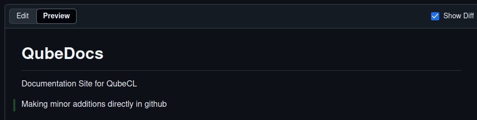

This site uses MkDocs (a static site generator optimized for project documentation). The fundamental content of the site is stored in Markdown text files (a human-readable file format with build-in styling syntax) that can be edited in any text editor.
Additional styling and functionality comes from the chosen theme Material for MkDocs and its plugins, CSS, and Python extensions. The entire site is hosted directly on github pages and can be exported to a formatted PDF for offline viewing.
If you just want to edit or add content to the site, you do not need to install the entire development environment, you can simply modify the desired pages in a text editor (perhaps one with a markdown preview such VSCode in github online editor) or directly on the main github site for small changes.
NOTE:
A basic editor will not give you a complete preview of the final site, but is sufficient to add content and confirm basic formatting.
Figure 1: Github online code editor with built-in markdown preview:
Figure 2: Github direct edit, preview and commit:
Figure 3: github direct preview
If you want to see a complete preview of the site before update, or if you would like to edit the styling or make additions to the plugins used in the site, please follow the intructions in the Advanced Features section.
If you create a new page (ex. test.md) and save it in the /docs folder, it will be accessable via the url site.io/<file_name> but it is not automatically added to the site navigation bar. To add it to the site nav, you first need to add it to the navigation structure in the mkdocs.yml file for it to be findable by users. Give the button a name and list the file path starting in docs: (<Button_Name>: <filepath/file_name>)
If you are happy with your changes to the documentation and would like to update the site, all you have to do is commit and push your changes to the main github branch in order to automatically update the live version.
If you have made changes directly to a single page at a time in github, all you have to do is save by selecting commit changes in the Github browser.
If you are working locally or in a github code environment, you will have to follow a couple more steps to conform to git version control (See pushing to github)
Saving incomplete work
(if you are unsure of your changes, or if they are incomplete, please save them in an un-listed .md file or push to a new branch while working).
Saving PDF Versions
Every time the site is updated, a downloadable PDF version of the entire site is generated and available for download from the download page (currently it is saved as QubeCL_Manual.pdf, but that can be changed). At any time, if you would like to save a version of the site and manual, you can simply save the desired .md file along with its assets folder and PDF. By saving it under a new name in the /docs/downloads folder, the PDF can be added to the download page as a dated version of the manual
Follow best-practices with pushing and pulling to Github (via cmd terminal)
git fetch / git pull - make sure your local version is up to date
git branch - check what branch you are on
If necessary, switch branch with git switch -c <new branch name> or git checkout <remote branch name>
Make your desired changes on desired branch (edit main if wanting to immediately update site)
git status - see which files you've changed
git add <files> - add files
git commit -m "description of changes" - change message
git push - push changes to Github
git status / git log - confirm changes were saved
If you pushed directly to main, your changes will automatically be reflected on the site. If you pushed to another branch, you can continue to edit and push to that branch until you are ready to update the site.
When ready to update the site, follow Github instructions to make a pull request and merge your branch into main
Markdown is a simple text formatting language akin to HTML that has been widely adopted in recent years, particularly for documentation (github READMEs for example are markdown by default). It is extensible via tools such as mkdocs, python-markdown-extensions and many others, while also being leggible in a standard text editor.
Referencing an anchor:
You can create an anchor point to a header, figure, table, or piece of text by adding {#anchor-name} to the end of it. and link to it by using this syntax:
[this](#anchor-name)
This works even across pages if you include the page's file path from your current location before the hashtag.
If you have a figure or a table that was created using the caption extension, you can leave the square brackets blank when referencing it and the correct table or figure number will be populated instead.
Additional functionality has been added to this site via various python extensions. You can access these features by using the correct syntax described below.
This plugin allows for the insertion of tables in a more programmatic way.
You can add a csv file to the /docs folder and have it be auto-generated by the python mkdocs-table-reader-plugin (less formatting control but good for large datasets that might be modified regularly)
Create a Caption and a tag of a table or image like so:
<Table/Figure>: <Description> {#tag}
and leave a space between the caption line and the figure/table.
Ex:
Tablè: Power source voltages specifications{#pwr_specs}
|DC Input |minimum |typical | maximum |
|---|---|---|---|
| LAS | +20 V | +24 V | +30 V |
| TEC | +8 V | +12 V | +24 V |
Whenever the site is rebuilt (mkdocs serve or mkdocs build) it is saved in a pdf format to the downloads folder. This takes a few seconds. If you are testing locally and don't want to regenerate it each time, you can suppress this feature by uncommenting the following line in the mkdocs.yml (remember to comment out when done editing).
- to-pdf: # enable to auto-generate PDF download(currently for whole site)
...
enabled_if_env: ENABLED_PDF_EXPORT #uncomment this line to
To edit the styling or functionality of the site, it is best develop on a fully functional local version (before updating the live site).
If you don't already know how to use github, follow the readme instructions to setup your local environment.
You can also use the live editor in github instead of on your local machine.
You can reach the live editor from your browser by changing the url of the project from github.com/ppqSense/QubeDocs/ to github.dev/ppqSense/QubeDocs/ and setting up a GitHub Codespace by opening up the terminal and selecting "Continue Working in GitHub Codespaces". From here you can follow the rest of the instructions as you would locally.
Changes to content should be reflected automatically upon save if mkdocs serve is running.
mkdocs build must be re-run upon changes to styling, plugins, or structure.
Any changes to the python environment (addition of extensions, etc.) should be reflected in the requirements.txt file. This can be updated with the following command from the main directory:
pip freeze > requirements.txt (do before pushing changes)
This is important to make sure that other editors can correctly setup their environment for testing.